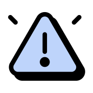

01 · Descoberta
Qual a melhor maneira de entregar um boletim que o aluno use
Depois de analisar o NPS, as pesquisas que o time já tinha feito e um dia na vida conduzido por um dos designers, ficou claro que esse aluno está sempre em movimento e precisava de algo de fácil acesso, que estivesse com ele o tempo todo.
O aluno de medicina
O curso é integral e exige muito. Devolver tempo para o que importa, o estudo e o descanso, era o critério que separava uma boa solução de uma solução bonita.
02 · Experimento
Qual funcionalidade o aluno quer primeiro
Estruturamos um experimento para medir a desejabilidade de cada funcionalidade, e assim priorizar o que já sabíamos ser dor do aluno e da empresa.
O calendário doía mais que o boletim.
De 10 funcionalidades testadas, 4 tiveram entusiasta espontâneo, e o boletim completo, que era a aposta inicial do time, ficou atrás delas.
03 · Rituais
Saímos de Scrum para Kanban
Com o rascunho já pronto antes do encontro, o que sobrou para a agenda foi dúvida, não redação.
Reduzimos bastante teste de usabilidade, porque o Claude passou a apontar problema de fluxo com consistência, usando heurística de Norman e Nielsen mais o que a gente já sabe do nosso público.

Aqui eu cortei rápido demais
A análise pegava tudo que é padrão de interface e não pegou a única coisa que travava um fluxo de configuração de agente, que era o nome de um campo no vocabulário de quem trabalha dentro de um varejista. Heurística não pega linguagem de domínio.
Hoje a regra é que teste com gente continua obrigatório quando a entrega traz vocabulário novo ou muda modelo mental.
04 · Resultado
O agente parou de responder à mensagem e passou a responder à intenção
A conversão de leads qualificados subiu 8 pontos, medida pela taxa dos agentes de vendas conversacionais. O ganho não veio de uma oferta melhor nem de um texto mais persuasivo.
Veio das duas origens que mais perdiam conversão antes da mudança, Instagram e disparos de WhatsApp.
A interface não é mais o objeto principal do trabalho. O objeto é a decisão.
O que o agente pode decidir sozinho, o que ele precisa verificar antes de agir e como mostra isso para quem precisa confiar no resultado. Desenhar bem essa camada foi o que gerou o ganho de conversão.